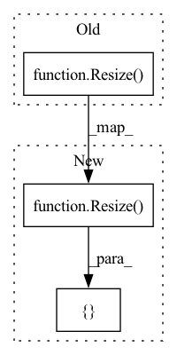

Pattern ID :20656
Before Change
def get_valid_transforms(cfg):
return Compose([
// CenterCrop(cfg["img_size"], cfg["img_size"], p=1.),
Resize( cfg["img_size"], cfg["img_size"]) ,
Normalize(mean=[0.485, 0.456, 0.406], std=[0.229, 0.224, 0.225], max_pixel_value=255.0, p=1.0),
ToTensorV2(p=1.0),
], p=1.)After Change
return Compose(default_transform_list, p=1.)
def get_valid_transforms(cfg):
default_transform_list = [
Resize( cfg["img_size"], cfg["img_size"])
]
for tsf_item, value in cfg["val_aug"].items():
if value is not None:
default_transform_list.append(eval(tsf_item)(*value))In pattern: SUPERPATTERN
Frequency: 3
Non-data size: 3
Instances Fragment ID: 66507492
Project Name: stephenfang51/image_classification_pytorch
Commit Name: c8f5e0e73775bc012314f7a2582dcc49b4ddb74d
Time: 2021-10-15
Author: r851000@gmail.com
File Name: data_load/data_transforms.py
M Class Name: AnonimousClass
N Class Name: AnonimousClass
M Method Name: get_valid_transforms(1)
N Method Name: get_valid_transforms(1)
M Parent Class:
N Parent Class:
M File Name: data_load/data_transforms.py
N File Name: data_load/data_transforms.py
M Start Line: 26
M End Line: 31
N Start Line: 21
N End Line: 30
Before Change
])
else:
return Compose([
Resize( image_size, interpolation=InterpolationMode.BICUBIC) ,
CenterCrop(image_size),
_convert_to_rgb,
ToTensor(),After Change
ResizeMaxSize(image_size, fill=fill_color)
]
else:
transforms = [
Resize( image_size, interpolation=InterpolationMode.BICUBIC) ,
CenterCrop(image_size) Fragment ID: 66507488
Project Name: mlfoundations/open_clip
Commit Name: 3fc69fc931cb31e84fd70536df998af7c2bda763
Time: 2022-06-08
Author: rwightman@gmail.com
File Name: src/open_clip/transform.py
M Class Name: AnonimousClass
N Class Name: AnonimousClass
M Method Name: image_transform(6)
N Method Name: image_transform(4)
M Parent Class:
N Parent Class:
M File Name: src/open_clip/transform.py
N File Name: src/open_clip/transform.py
M Start Line: 10
M End Line: 30
N Start Line: 43
N End Line: 79
Before Change
def _crop_data(self, sample):
if self.crop_function == "resize":
aug = Resize(
height=self.input_shape[0],
width=self.input_shape[1],
interpolation=cv2.INTER_AREA,
always_apply=True,
)
else:
raise ValueError(f"{self.crop_function} cropping strategy is not available")
return aug(**sample)After Change
if self.crop_function == "resize":
aug = Compose(
[
PadIfNeeded(
min_height=sample["image"].shape[1],
min_width=sample["image"].shape[1],
border_mode=cv2.BORDER_CONSTANT,
always_apply=True,
),
Resize(
height=self.input_shape[0],
width=self.input_shape[1],
interpolation=cv2.INTER_AREA,
always_apply=True,
) ,
]
)
else: Fragment ID: 66507489
Project Name: ybabakhin/zindi_wheat_growth
Commit Name: e61b26e69a40104adda5e509687dd8b9110c6618
Time: 2020-09-10
Author: y.babakhin@gmail.com
File Name: src/dataset.py
M Class Name: ZindiWheatDataset
N Class Name: ZindiWheatDataset
M Method Name: _crop_data(2)
N Method Name: _crop_data(2)
M Parent Class: Dataset
N Parent Class: Dataset
M File Name: src/dataset.py
N File Name: src/dataset.py
M Start Line: 68
M End Line: 73
N Start Line: 68
N End Line: 83